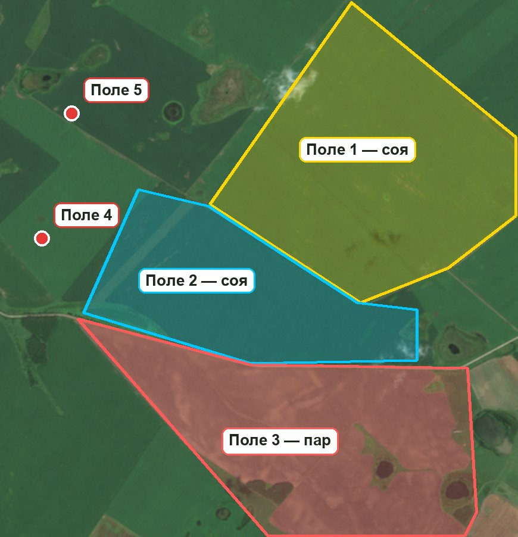

Что прислать
Три уровня — выберите, на что хватит времени.
Точка в каждом поле
- одна точка (координаты) в середине каждого поля
- как вы называете поле
- что на нём в этом году
Обведённые поля
- каждое поле обведено по границе на спутниковой карте
- подпись: название и культура
- таблица по полям — шаблон ниже
Всё, что есть
- обведённые поля и кадастровые номера
- культуры за прошлые годы, урожайность
- журнал обработок, проблемные места
Контуры можно не рисовать идеально. Достаточно примерно, по краю поля. Точную границу мы подправим по спутниковым снимкам, а вы потом проверите её на карте.
Как это должно выглядеть
Пример на настоящем снимке: три поля обведены, два отмечены точками.

Как обвести или отметить поля
Любой из способов. Обводить удобнее на компьютере, точки — можно с телефона.
А. Яндекс Конструктор карт
рекомендуемна компьютере- Откройте yandex.ru/map-constructor и войдите в Яндекс ID (та же учётная запись, что для Яндекс Почты или Такси).
- Нажмите «Создать карту». Найдите своё место поиском и включите вид «Спутник», чтобы были видны поля.
- Выберите инструмент «Многоугольники» и кликайте по углам поля по очереди. Замкните контур, кликнув по первой точке.
- В появившемся окошке напишите название и культуру: Поле 3 — соя. Сохраните. Повторите для каждого поля.
- Сохраните карту, затем выберите «Экспорт» и формат KML или GeoJSON — скачается файл.
Что прислать: скачанный файл (.kml или .geojson). Если с экспортом не получилось — пришлите ссылку на карту.
Б. Google Мои карты
на компьютере- Откройте Google Мои карты и войдите в Google-аккаунт. Нажмите «Создать карту».
- Внизу слева в «Базовая карта» выберите «Спутник». Найдите своё место поиском.
- Нажмите значок «Нарисовать линию» → «Добавить линию или фигуру». Кликайте по углам поля и замкните контур на первой точке.
- Назовите фигуру: Поле 3 — соя. Повторите для каждого поля.
- В меню карты (три точки рядом с названием) выберите «Экспорт в KML/KMZ» и скачайте файл.
Что прислать: файл .kml или .kmz.
В. Только точки — с телефона
5 минут на поле- Яндекс Карты: включите вид «Спутник», нажмите и подержите палец на середине поля → «Что здесь?» → появятся координаты, скопируйте их.
- Google Карты: нажмите и подержите палец на середине поля → появится метка, а координаты — в строке поиска сверху. Скопируйте их.
- Запишите рядом название поля и культуру — прямо в сообщении или в таблице ниже.
Что прислать: список строк вида Поле 4 — соя — 50.0812, 127.9734. Сначала широта, потом долгота — так их и копируют карты.
Г. Кадастровые номера
отлично в дополнениеНомера участков вида 28:23:010101:123 — из свидетельств или выписок ЕГРН, договоров аренды, документов на паи. По ним мы получим официальные границы.
Важно: участок по документам и поле часто не совпадают — одно поле бывает на нескольких участках и наоборот. Поэтому рядом с номером укажите, к какому полю он относится.
Д. Файлы с техники и из программ
если естьЕсли поля уже заведены в навигаторе трактора или комбайна, у агронома, в программе учёта или у подрядчика по агрохимии — пришлите файлы как есть: .shp (вместе со всеми файлами рядом, лучше одним архивом), .kml, .xml, .zip. Разберёмся сами.
Е. Скриншот с обведёнными полями
как подсказкаСфотографируйте экран карты и обведите поля пальцем в редакторе фото, подпишите номера. Само по себе неточно, но вместе с точками или кадастровыми номерами очень помогает.
Таблица по полям
Одна строка — одно поле. Заполните, что знаете, пустые клетки — не страшно.
| Поле | Кадастровые номера | Точка в поле | Площадь, га | Культура 2026 | Сорт | Посев 2026 | Культура 2025 | Культура 2024 | Урожай 2025, ц/га | Проблемы в этом году |
|---|---|---|---|---|---|---|---|---|---|---|
| Поле 1 | 28:23:010101:123 | 50.0912, 127.9934 | 180 | соя | Алена | 20.05 | пшеница | соя | 22 | очаг осота у дороги, вымочка в низине |
| Поле 2 | 28:23:010101:124, …:125 | 50.0835, 127.9701 | 95 | соя | 25.05 | соя | кукуруза | |||
| … | … | … | … | … | … | … | … | … | … | … |
Значения в примере выдуманы — для образца.
Скачать шаблон для ExcelФайл открывается в Excel, Google Таблицах и «Мой Офис». Можно и просто написать то же самое сообщением — как удобнее.
Что ещё пригодится
Не обязательно, но чем больше — тем полезнее будет система с первого дня.
- Культуры по полям за прошлые 3–5 летсразу построим историю севооборота; снимки за прошлые годы у спутника уже есть
- Урожайность по полям за прошлые годысравним со снимками — увидим, где поле стабильно недодаёт
- Журнал обработок — хоть фото тетрадиперенесём в историю полей
- Где в этом году были очаги сорняков, вымочки, полеганиеточками на карте или словами: «поле 3, у лесополосы»
- Какая техника и есть ли на ней навигациямарка и модель — поймём, можно ли потом делать карты для внесения
- Кто будет смотреть систему и с каких телефоноввы, агроном, механизаторы; есть ли у всех Telegram
Как отправить
- Файлы с полями (.kml, .kmz, .geojson) или ссылка на карту — или список точек
- Таблица по полям — файлом или текстом
- Кадастровые номера с пометкой, к какому полю относятся — если есть
- Всё остальное из раздела 5 — фото, скриншоты, файлы как есть
Куда: всё одним сообщением тому, кто прислал вам эту ссылку. Если что-то непонятно — просто спросите, подскажем.
Безопасность: на этой странице ваших данных нет и не будет. Присланные файлы мы используем только для вашей системы.
Что будет дальше
Посмотреть, как это будет выглядеть
Пример на настоящих снимках и объяснение, как всё устроено:
Как это работает: поля по датам, графики, зоны → Предложение: что можем сделать →